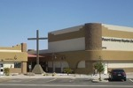
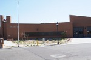

Welcome to M & J Caulking and Waterproofing
M & J Caulking is primarily a subcontractor doing business with general contractors on commercial projects. These commercial projects have consisted of:
- New construction, i.e., tilt-panel buildings, masonry, etc.
- Renovations and additions to existing buildings
- Fence walls and borders, planters
- Removal and replacement of existing sealant on buildings
- Limited residential such as fixing leaks, caulking patios and exterior perimeter of homes, windows and doors

Desert Gateway Baptist Church
Desert Gateway Baptist Church

Glendale Fire Station
Glendale Fire Station
Social Security Building
Thompson Ranch Elementary School